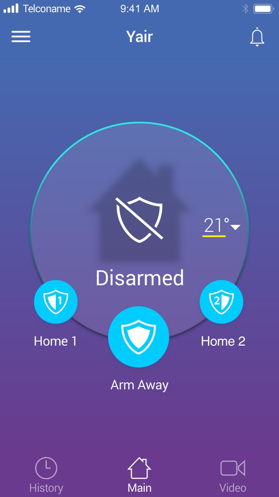
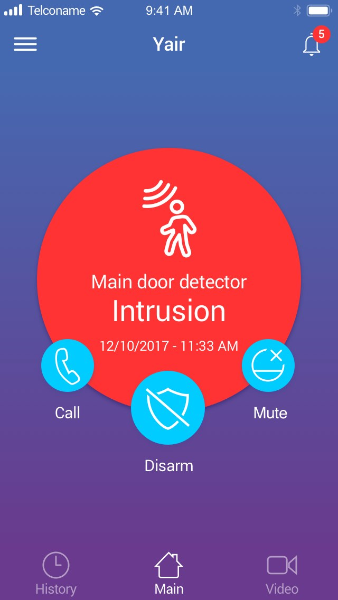
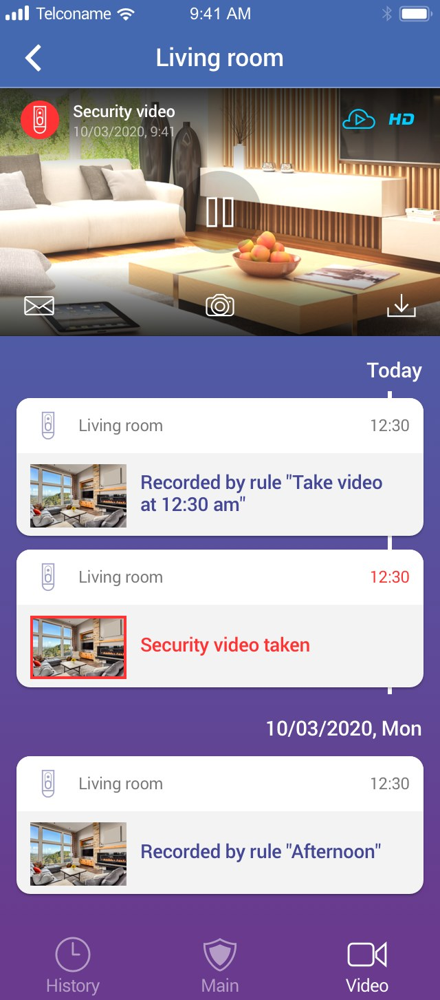
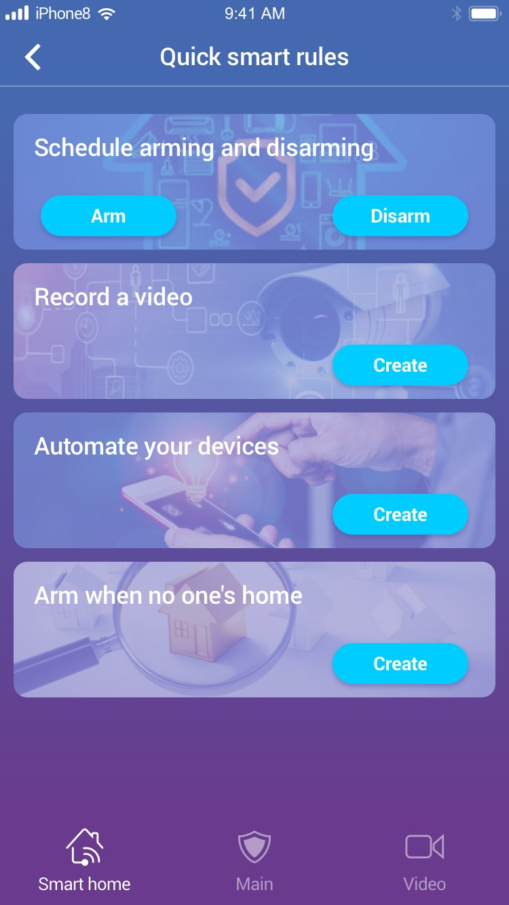
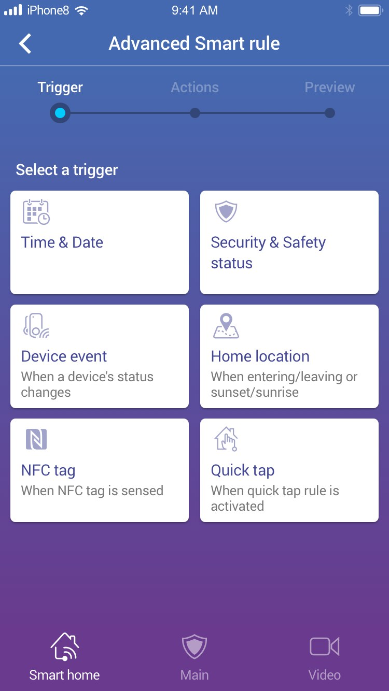
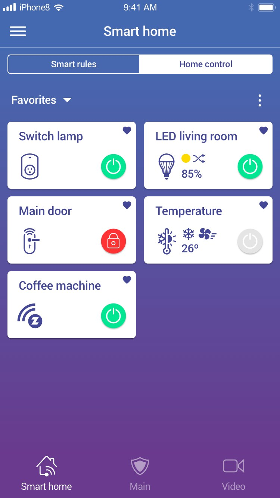
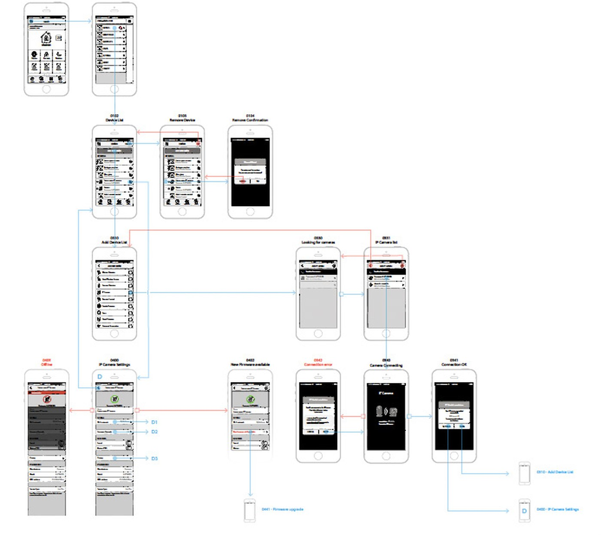
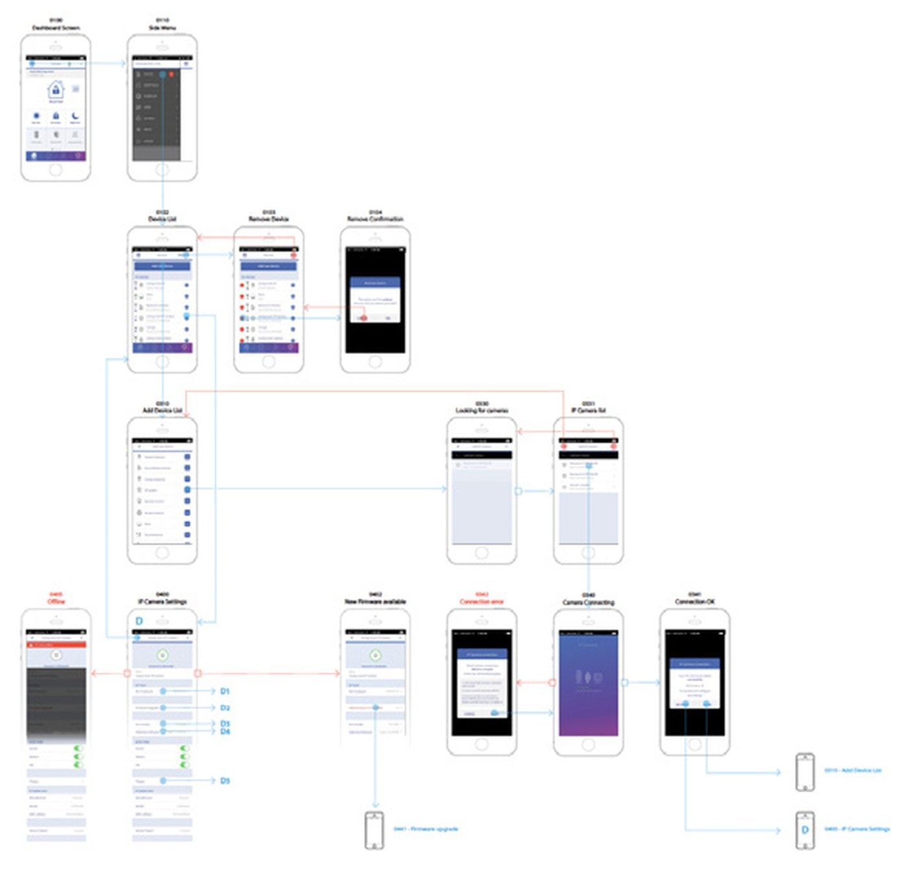

Essence Group · 2020–2025 · App Móvil · Smart Home · IoT · ~100.000 usuarios · 4 operadores
Essence Group · 2020–2025 · Mobile App · Smart Home · IoT · ~100,000 users · 4 operators
WeR@Home+
Como diseñador UX/UI, fui responsable del diseño integral de WeR@Home+, un sistema completo de seguridad inteligente desplegado por 4 operadores con más de 100.000 usuarios. El proyecto incluía una app móvil para usuarios finales y un Centro de Administración web para proveedores. Desarrollado como solución white-label modular, adaptable a distintas identidades de marca sin comprometer la coherencia ni la usabilidad.
As UX/UI designer, I was solely responsible for the end-to-end design of WeR@Home+, a comprehensive smart security system deployed across 4 operators with over 100,000 users. The project included a mobile app for end-users and a web-based Administration Centre for service providers. Built as a modular white-label solution, adaptable to different brand identities without compromising consistency or usability.
UX Research
Wireframing
Hi-Fi Prototyping
Design System
White-label
Usability Testing
IoT






01 · Investigación y Análisis
01 · Research & Analysis
-
Análisis de la competencia: estudio de aplicaciones similares en el mercado de seguridad y domótica para identificar fortalezas y debilidades en funcionalidades y experiencia de usuario.
Competitive analysis: similar applications in the security and home automation market were studied to identify strengths and weaknesses in their functionalities and user experience.
-
Definición de clústers de usuarios: segmentación en perfiles como propietarios, administradores de negocio y técnicos de seguridad, para comprender mejor sus necesidades y expectativas.
User cluster definition: users were segmented into profiles — homeowners, business administrators, and security technicians — to better understand their needs and expectations.
-
User Stories: escenarios de uso para mapear la experiencia ideal en la gestión de alarmas, videovigilancia y dispositivos IoT.
User Stories: usage scenarios created to map the ideal user experience for managing alarms, video surveillance, and IoT devices.
-
Entrevistas con usuarios: validación de necesidades y puntos de dolor en la gestión de seguridad y automatización del hogar.
User interviews: conducted with potential users to validate needs and understand main pain points in security and home automation management.
-
Análisis de requisitos: definición conjunta con stakeholders de las funcionalidades clave según necesidades de mercado y capacidades tecnológicas.
Requirement analysis: key functionalities defined in collaboration with stakeholders, aligned with market needs and technological capabilities.
02 · Arquitectura de Información y Prototipado
02 · Information Architecture & Prototyping
-
Mapa de la aplicación: estructura en módulos principales — gestión de alarmas, videovigilancia, automatización IoT y configuración personalizada.
Application map: the app was structured into key modules — alarm management, video surveillance, IoT automation, and personalised settings.
-
Wireframes: bocetos de baja fidelidad para definir la disposición de elementos clave y los flujos de interacción.
Wireframes: low-fidelity sketches created to define the layout of key elements and interaction flows.
-
Pruebas de usabilidad tempranas: tests con usuarios para validar la navegación y realizar ajustes antes de avanzar al diseño visual.
Early usability testing: tests conducted with users to validate navigation and make adjustments before advancing to visual design.

03 · Diseño Visual e Interacción
03 · Visual & Interaction Design
-
Prototipos de alta fidelidad: interfaz moderna y minimalista priorizando claridad y accesibilidad.
High-fidelity prototypes: modern and minimalist interface prioritising clarity and accessibility.
-
Interacciones y microanimaciones: animaciones sutiles para mejorar la retroalimentación visual y la experiencia de navegación.
Interactions and microanimations: subtle animations implemented to enhance visual feedback and navigation experience.
-
Modo oscuro y accesibilidad: personalización para mejorar la legibilidad en distintos entornos de iluminación.
Dark mode and accessibility: personalisation options included to improve readability and usability in different lighting conditions.
-
Sistema de reglas inteligentes: el principal reto de UX fue diseñar un sistema de automatización potente pero comprensible para usuarios sin conocimientos técnicos, mediante revelación progresiva e interacciones guiadas.
Smart rule system: the main UX challenge was designing a powerful automation system that remained understandable for non-technical users, through progressive disclosure and guided interactions.

04 · Pruebas y Optimización
04 · Testing & Optimisation
-
Test de usabilidad: evaluación de las funciones clave — activación de alarmas, visualización en tiempo real de cámaras de seguridad.
Usability testing: evaluation of key features — alarm activation and real-time viewing of security cameras.
-
Feedback iterativo: mejoras continuas en base a la retroalimentación de usuarios beta.
Iterative feedback: ongoing improvements based on feedback from beta users.
-
Optimización de accesibilidad: ajustes visuales y funcionales para mejorar la inclusión de personas con distintas capacidades.
Accessibility optimisation: visual and functional elements adjusted to enhance inclusion for users with different abilities.
El diseño final permitió a los usuarios gestionar la seguridad de sus hogares y negocios de forma intuitiva y eficiente. La combinación de diseño claro, interacciones optimizadas y pruebas constantes resultó en una experiencia que aumentó la confianza de los usuarios en el sistema — desplegada con éxito en 4 operadores y más de 100.000 usuarios.
The final design enabled users to manage their home and business security intuitively and efficiently. The combination of clear design, optimised interactions, and continuous testing resulted in an experience that increased user confidence in the system — successfully deployed across 4 operators and over 100,000 users.